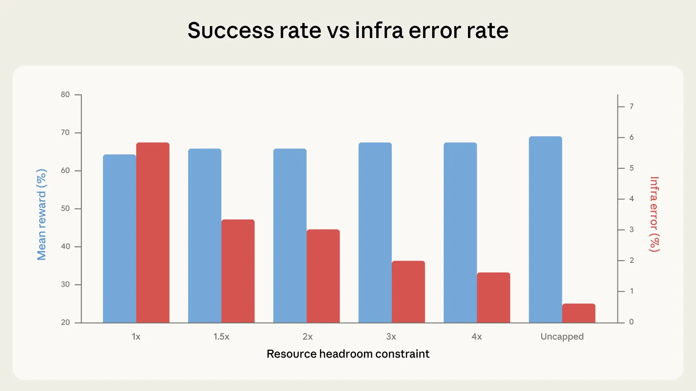

量化智能体编码评测中的基础设施噪声
📖 中文摘要
专业术语注解
基础设施噪声：由容器资源配置、集群状态等非模型因素引起的评测分数波动保证分配量与硬杀阈值：容器运行时预留资源、以及超限即杀容器的两个独立参数瞬时资源峰值：短时内存波动，在上下限相等时会误杀本可成功的容器OOM杀掉：容器超出内存上限时被运行时强制终止的现象端到端系统测试：智能体评测连同运行环境一起被测量、各组件都可能成为混淆因素的性质📄 中文全文
- 类别： 工程（Engineering）
- 来源： https://www.anthropic.com/research/infrastructure-noise
工程（Engineering） 2026 年 2 月 5 日 已发布 2026 年 2 月 5 日 团队 工程 主题
相关文章 * 工程 2026 年 1 月 9 日 揭开AI智能体评测的神秘面纱
阅读更多 像SWE-bench和Terminal-Bench这样的智能体编码基准，常被用来比较前沿模型的软件工程能力——排行榜上靠前的名次往往只相差几个百分点。这些分数常被当作对模型相对能力的精确度量，并越来越多地影响该部署哪个模型的决策。然而我们发现，仅基础设施配置一项就能造成超过这些差距的差异。在内部实验中，Terminal-Bench 2.0上资源配置最多与最少的方案之间相差6个百分点（p < 0.01）。 静态基准直接给模型的输出打分——运行环境不影响结果。智能体编码评测则不同：模型被给予一个完整环境，在其中写程序、跑测试、安装依赖，并跨多轮迭代。运行环境不再是被动的容器，而是解题过程中不可或缺的组成部分。资源预算和时间限制不同的两个智能体，并不是在参加同一场考试。 评测开发者已开始考虑这一点。例如Terminal-Bench 2.0在其最新的2.0版本中，按任务逐一给出了推荐的CPU和RAM。然而，规定资源并不等于始终一致地强制执行。此外我们发现，强制执行的方式本身会改变基准最终实际测量的东西。
来龙去脉
我们在Google Kubernetes Engine集群上运行Terminal-Bench 2.0。校准环境时，我们注意到分数与基准官方排行榜对不上，而且基础设施错误率高得出奇：多达6%的任务因pod错误而失败，其中大多数与模型解题能力无关。
分数差异归结到强制执行方式上。我们的Kubernetes实现把按任务的资源规格同时当作下限和硬上限：每个容器被保证获得指定资源，但一旦超出就立刻被杀掉。容器运行时通过两个独立参数来强制资源：一个是保证分配量——预先预留的资源，另一个是容器被杀掉的硬限制。当两者设为同一数值时，瞬时峰值就没有丝毫余量：一次短暂的内存波动就可能把本可成功的容器OOM杀掉。为此，Terminal-Bench的排行榜采用了另一家沙箱供应商，其实现更为宽松，允许临时超额分配而不终止容器，以换取基础设施的稳定性。
这一发现引出一个更大的问题：资源配置究竟在多大程度上影响评测分数？
为量化脚手架的影响，我们在六种资源配置下运行了Terminal-Bench 2.0：从严格执行按任务规格（1x，让其同时充当下限与上限），一直到完全不设上限。其余一切保持不变：同一个Claude模型、同一套脚手架、同一组任务。
在我们的实验中，成功率随资源余量上升。这主要由基础设施错误率逐级单调下降所驱动：从严格执行时的5.8%降到不设上限时的0.5%。从严格执行到3x余量之间的降幅（5.8%到2.1%）在p < 0.001水平上显著。余量越大，因超出分配量而被杀掉的容器就越少。
从1x到3x，成功分数在噪声范围内波动（p=0.40）。在1x下崩溃的任务，大多数无论如何都会失败——这是我们在数据里观察到的。智能体四处探索、撞上资源墙、被抢占，但它本就没有走在通往正确解法的路上。
然而从大约3x开始，这一趋势变了：成功率上升得比基础设施错误率下降得更快。
从3x到不设上限，基础设施错误率又降了1.6个百分点，而成功率跃升近4个百分点。额外资源让智能体能够尝试那些只有在宽松分配下才可行的做法，例如拉入大型依赖、派生开销大的子进程、运行内存密集的测试套件。在资源不设上限时，相对1x的总提升为+6个百分点（p < 0.01）。在临界处，像rstan-to-pystan和compile-compcert这样的任务在获得内存余量后成功率显著提高。
这如何影响测量
在大致3x于Terminal-Bench规格以内，额外资源解决的是基础设施可靠性问题，也就是瞬时资源峰值。Terminal-Bench维护者所用的沙箱供应商其实在幕后隐式地做了这件事；评测变得更稳定，却没有变简单。
然而超过3x这条线之后，额外资源开始主动帮助智能体解决此前解决不了的问题，这说明限制确实会改变评测所测量的东西。紧的限制无意中奖励极其高效的策略，而宽松的限制更宽容，奖励那些能更充分利用所有可用资源的智能体。
一个能很快写出精简高效代码的智能体，在紧约束下表现会好；一个用重量级工具蛮力求解的智能体，在宽松条件下表现会好。两者都是值得检验的合理对象，但若在不注明资源配置的情况下把它们压成单一分数，就会让这些差异——以及向真实世界的可推广性——难以解读。
在bn-fit-modify这个要求拟合贝叶斯网络的Terminal-Bench任务上，有些模型的第一步是安装标准的Python数据科学全家桶：pandas、networkx、scikit-learn,以及它们的整套工具链。在宽松限制下这行得通；在紧限制下，pod会在安装过程中耗尽内存，此时智能体连一行解题代码都还没写。存在一条更精简的路子（只用标准库从零实现数学），有些模型确实默认走它，另一些则不。不同模型有不同的默认做法，而资源配置决定了其中哪些做法恰好能成功。我们在不同的Anthropic模型上复现了这一核心发现：效应方向一致，幅度各异。同样的趋势似乎也适用于Claude以外的模型，但我们尚未严格检验。
我们还通过在SWE-bench上做交叉实验，检验这一模式是否也存在于Terminal-Bench之外的评测。我们在227道题上把可用总RAM最高调到基线的5x，每题采样10次。同样的效应依然成立，只是幅度更小：分数再次随RAM单调上升，但5x时仅比1x高1.54个百分点。SWE-bench的任务资源密集度较低，效应较小在意料之中，但这说明资源分配在那里也并非中性。

其他方差来源
资源分配并不是唯一的隐藏变量。在某些配置下，时间限制也开始起作用。 原则上，评测设置的每个要素都能影响最终分数：从集群健康状况到硬件规格，从并发级别到甚至出网带宽。智能体评测在构造上就是端到端的系统测试，该系统的任何组件都可能成为混淆因素。例如我们曾零星观察到，通过率会随一天中的时段波动，很可能是因为API延迟随流量模式和事故而变化。我们尚未正式量化这一效应，但它说明了一个更大的道理：「模型能力」与「基础设施行为」之间的边界，比单一基准分数所暗示的要模糊得多。模型提供商可以通过专用硬件让自己的评测基础设施免受影响，但外部评测者很难做到同样的事。 公开基准通常意在测量纯粹的模型能力，但实践中它们有把能力与基础设施怪癖混为一谈的风险。有时这或许是可取的，因为它能对整个技术栈做端到端测试，但多数时候并非如此。对于打算公开发布的编码评测，在多个时段、多天运行，有助于把噪声平均掉。
我们的建议
理想情形是让每次评测都在完全相同的硬件条件下运行——既包括运行评测的脚手架，也包括推理栈——这样能确保全面可复现。然而这未必总是现实可行。 鉴于容器运行时实际强制资源的方式——通过一个保证分配量和一个独立的硬杀阈值——我们建议评测按任务同时指定这两个参数，而不是钉死单一数值。单一精确规格会把保证分配量设得等于杀掉阈值，不留任何余量：我们在1x下记录到的瞬时内存峰值就足以让评测失稳。把两个参数分开，既能给容器足够的喘息空间以避免虚假的OOM杀掉，又能继续强制执行防止分数虚高的硬上限。 二者之间的区间应经过校准，使下限与上限处的分数落在彼此的噪声范围内。例如在Terminal-Bench 2.0中，按任务规格设3x的上限把基础设施错误率削减了约三分之二（5.8%到2.1%，p < 0.001），同时把分数提升保持在温和且完全处于噪声之内的水平（p = 0.40）。这是个合理的折中：基础设施混淆因素基本被中和，又没有拿掉有意义的资源压力。具体倍率会随基准和任务分布而变，因此应当报告出来，但这条经验校准原则是通用的。
我们为何在意
这些发现的影响不止于评测基础设施。基准分数正越来越多地被当作决策输入，但这种关注（与依赖）的提升，并未总伴随着运行与报告方式上相应的严谨。就现状而言，排行榜上领先2分，可能反映的是真实的能力差异，也可能只是某次评测跑在了更强的硬件上，甚至只是赶上了更走运的时段，或两者兼有。若没有公开（或标准化）的设置配置，外界很难分辨，除非相关方额外费功夫在相同条件下复现客观结果。 对Anthropic这样的实验室而言，其含义是：智能体评测的资源配置应被当作一等实验变量，像提示词格式或采样温度那样被记录和严格控制。对基准维护者来说，公布推荐资源规格（Terminal-Bench 2.0已这么做）大有帮助，而注明强制执行方式则会补上我们所指出的缺口。对任何使用基准结果的人来说，核心结论是：智能体评测上微小的分数差异，其不确定性比所报数字的精度所暗示的要大——尤其因为有些混淆因素根本难以控制。 在资源方法标准化之前，我们的数据表明，排行榜上低于3个百分点的差异都值得怀疑，直到评测配置被记录并匹配一致为止。Terminal-Bench中资源配置中等区间内观测到的离散度略低于2个百分点。朴素二项置信区间本身已跨越1到2个百分点；我们在此记录的基础设施混淆因素是叠加在其之上，而非包含于其中。在分配范围的两端，离散度达到6。 领先几分也许意味着真实的能力差距——也可能只不过是一台更大的虚拟机。
作者与致谢
致谢
作者：Gian Segato。特别感谢Nicholas Carlini、Jeremy Hadfield、Mike Merrill和Alex Shaw的贡献。本工作凝聚了多个从事编码智能体评测的团队的共同努力。有意贡献的候选人欢迎前往anthropic.com/careers申请。
▸ 英文原文（点击展开）
Quantifying infrastructure noise in agentic coding evals
- Date: 2026-02-05
- Source: https://www.anthropic.com/research/infrastructure-noise
Quantifying infrastructure noise in agentic coding evals
Published Feb 5, 2026 Team Engineering Topics
Related articles * Engineering Jan 9, 2026 Demystifying evals for AI agents
View more Agentic coding benchmarks like SWE-bench and Terminal-Bench are commonly used to compare the software engineering capabilities of frontier models—with top spots on leaderboards often separated by just a few percentage points. These scores are often treated as precise measurements of relative model capability and increasingly inform decisions about which models to deploy. However, we’ve found that infrastructure configuration alone can produce differences that exceed those margins. In internal experiments, the gap between the most- and least-resourced setups on Terminal-Bench 2.0 was 6 percentage points (p < 0.01). Static benchmarks score a model's output directly—the runtime environment doesn’t factor into the result. Agentic coding evals are different: models are given a full environment where they write programs, run tests, install dependencies, and iterate over multiple turns. The runtime is no longer a passive container, but an integral component of the problem-solving process. Two agents with different resource budgets and time limits aren't taking the same test. Eval developers have begun accounting for this. Terminal-Bench 2.0, for instance, specifies recommended CPU and RAM on a per-task basis in their latest 2.0 release. However, specifying resources isn't the same as enforcing them consistently. Moreover, we discovered that enforcement methodology can change what the benchmark ends up actually measuring.
How we got here
We run Terminal-Bench 2.0 on a Google Kubernetes Engine cluster. While calibrating the setup, we noticed our scores didn't match the benchmark’s official leaderboard, and infra error rates were surprisingly high: as many as 6% of tasks were failing because of pod errors, most of which were unrelated to the model’s ability to solve the tasks.
The discrepancy in scores came down to enforcement. Our Kubernetes implementation treated the per-task resource specs as both a floor and a hard ceiling: each container was guaranteed the specified resources but killed the moment it exceeded them. Container runtimes enforce resources via two separate parameters: a guaranteed allocation—the resources reserved up front—and a hard limit at which the container is killed. When these are set to the same value, there's zero headroom for transient spikes: a momentary memory fluctuation can OOM-kill a container that would otherwise have succeeded. To account for this, Terminal-Bench’s leaderboard uses a different sandboxing provider, whose implementation is more lenient, allowing temporary overallocation without terminating the container in order to favor infrastructural stability.
This finding raised a larger question: how much does resource configuration impact evaluation scores?
To quantify the effect of the scaffold, we ran Terminal-Bench 2.0 across six resource configurations, from strict enforcement of the per-task specs (1x), having them act as both floor and ceiling, to completely uncapped. Everything else stayed constant: same Claude model, same harness, same task set.
In our experiments, success rates increased with resource headroom. This was primarily driven by infra error rates dropping monotonically at each step, going from 5.8% at strict enforcement to 0.5% when uncapped. The drop between strict enforcement to 3x headroom (5.8% to 2.1%) was significant at p < 0.001. With more headroom, fewer containers get killed for exceeding their allocation.
From 1x through 3x, success scores fluctuate within the margins of noise (p=0.40). Most of the tasks that were crashing at 1x would have failed regardless—which is something that we observed in the data. The agent explores, hits a resource wall, and gets preempted, but it was never on a path to a correct solution.
Starting around 3x, however, this trend changes: success rates climb faster than infra errors decline.
Between 3x to uncapped, infra errors drop an additional 1.6 percentage points, while success jumps almost 4 percentage points. The extra resources enable the agent to try approaches that only work with generous allocations, such as pulling in large dependencies, spawning expensive subprocesses, and running memory-intensive test suites. At uncapped resources, the total lift over 1x is +6 percentage points (p < 0.01). At the margins, tasks like rstan-to-pystan and compile-compcert significantly improve their success rates when getting memory headroom.
How this affects measurement
Up to roughly 3x Terminal-Bench specs, the additional resources fix infrastructure reliability problems, namely transient resource spikes. The sandboxing provider used by the Terminal-Bench maintainers is implicitly doing this behind the scenes; the eval gets more stable without getting easier.
Above the 3x mark, however, additional resources start actively helping the agent solve problems it couldn't solve before, which shows that limits can actually change what the eval measures. Tight limits inadvertently reward very efficient strategies, while generous limits are more forgiving and reward agents that can better exploit all available resources.
An agent that writes lean, efficient code very fast will do well under tight constraints. An agent that brute-forces solutions with heavyweight tools will do well under generous ones. Both are legitimate things to test, but collapsing them into a single score without specifying the resource configuration makes the differences—and real-world generalizability—hard to interpret.
On bn-fit-modify, a Terminal-Bench task requiring Bayesian network fitting, some models’ first move is to install the standard Python data science stack: pandas, networkx, scikit-learn, and all their toolchain. Under generous limits, this works. Under tight ones, the pod runs out of memory during installation, before the agent writes a single line of solution code. A leaner strategy exists (implementing the math from scratch using only the standard library), and some models do default to it. Others don’t. Different models have different default approaches, and the resource configuration determines which of those approaches happen to succeed.We replicated the core finding across different Anthropic models. The direction of the effect was consistent, while the magnitude varied. The same trends seem to hold on models other than Claude, but we haven’t rigorously tested them.
We also tested whether this pattern holds on evals outside Terminal-Bench by running a crossover experiment on SWE-bench. We varied the total available RAM up to 5x the baseline across 227 problems with 10 samples each. The same effect held, though the magnitude was smaller: Scores again increased monotonically with RAM, but were only 1.54 percentage points higher at 5x than 1x. SWE-bench tasks are less resource-intensive, so a smaller effect is expected, but it shows resource allocation isn't neutral there either.

Other sources of variance
Resource allocation isn't the only hidden variable. In certain configurations, time limits too start playing a role. In principle, every element of the evaluation setup can influence the final score, from the cluster health to the hardware specs, from the concurrency level to even egress bandwidth. Agentic evals are end-to-end system tests by construction, and any component of that system can act as a confounder. We have observed anecdotally, for instance, that pass rates fluctuate with time of day, likely because API latency varies with traffic patterns and incidents. We have not formally quantified this effect, but it illustrates a larger point: the boundary between "model capability" and "infrastructure behavior" is blurrier than a single benchmark score suggests. A model provider can shield its eval infrastructure from this by dedicating hardware, but external evaluators can't easily do the same. Public benchmarks are typically meant to measure pure model capabilities, but in practice they risk conflating them with infrastructure quirks. Sometimes this may be desirable, as it enables end-to-end testing of the entire stack, but more often it's not. For coding evals meant to be shared publicly, running at multiple times and on multiple days would help average out the noise.
What we recommend
The ideal scenario is to run each eval under the exact same hardware conditions—both the scaffold running the eval and the inference stack—as it would ensure perfect reproducibility across the board. However, this may not always be practical. Given how container runtimes actually enforce resources—via a guaranteed allocation and a separate hard kill threshold—we recommend that evals specify both parameters per task, not a single pinned value. A single exact spec sets the guaranteed allocation equal to the kill threshold, leaving zero margin: the transient memory spikes we documented at 1x are enough to destabilize the eval. Separating the two parameters lets you give containers enough breathing room to avoid spurious OOM kills, while still enforcing a hard ceiling that prevents score inflation. The band between them should be calibrated so that scores at the floor and ceiling fall within noise of each other. For instance, in Terminal-Bench 2.0, a 3x ceiling over the per-task specs cut infra error rates by roughly two-thirds (5.8% to 2.1%, p < 0.001) while keeping the score lift modest and well within noise (p = 0.40). That's a reasonable tradeoff: the infrastructure confounder is largely neutralized without removing meaningful resource pressure. The exact multiplier will vary by benchmark and task distribution, and should thus be reported, but the empirical calibration principle is general.
Why we care
These findings have practical consequences beyond eval infrastructure. Benchmark scores are increasingly used as decision-making inputs, but this increased attention (and reliance) hasn’t always come with corresponding rigor in how they’re run or reported. As things stand today, a 2-point lead on a leaderboard might reflect a genuine capability difference, or it might reflect that one eval ran on beefier hardware, or even at a luckier time of day, or both. Without published (or standardized) setup configurations, it’s hard to tell from the outside unless interested parties go the extra mile to reproduce objective results under identical conditions. For labs like Anthropic, the implication is that resource configuration for agentic evals should be treated as a first-class experimental variable, documented and controlled with the same rigor as prompt format or sampling temperature. For benchmark maintainers, publishing recommended resource specs (as Terminal-Bench 2.0 does) can go a long way, while specifying enforcement methodology would close the gap we identified. And for anyone consuming benchmark results, the core takeaway is that small score differences on agentic evals carry more uncertainty than the precision of the reported numbers suggests—especially as some confounders are simply too hard to control for. Until resource methodology is standardized, our data suggests that leaderboard differences below 3 percentage points deserve skepticism until the eval configuration is documented and matched. The observed spread across the moderate range of resource configurations in Terminal-Bench is just below 2 percentage points. Naive binomial confidence intervals already span 1-2 percentage points; the infrastructure confounders we document here stack on top of that, not within it. At the extremes of the allocation range, the spread reaches 6. A few-point lead might signal a real capability gap—or it might just be a bigger VM.
Authors & acknowledgements
Acknowledgements
Written by Gian Segato. Special thanks to Nicholas Carlini, Jeremy Hadfield, Mike Merrill, and Alex Shaw for their contributions. This work reflects the collective efforts of several teams working on evaluations for coding agents. Interested candidates who would like to contribute are welcome to apply at anthropic.com/careers.